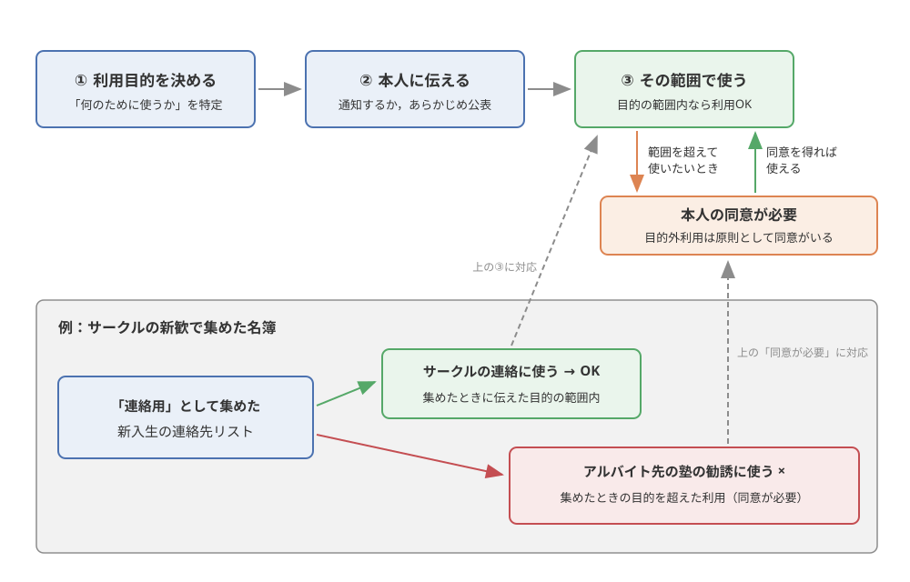
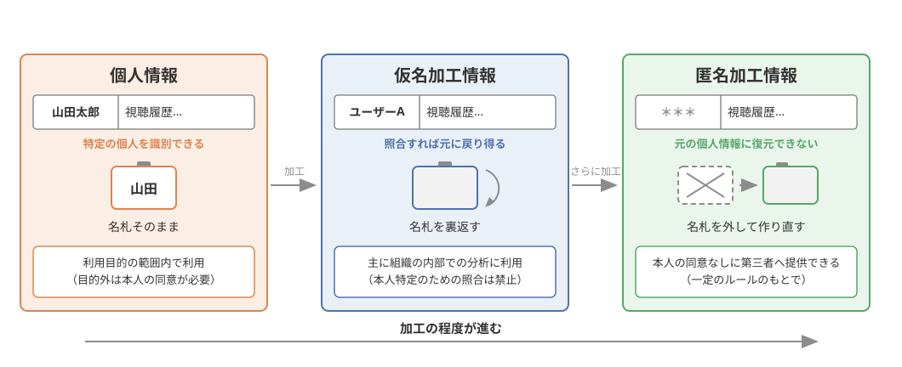
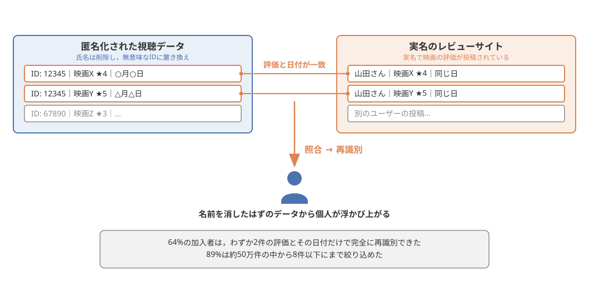
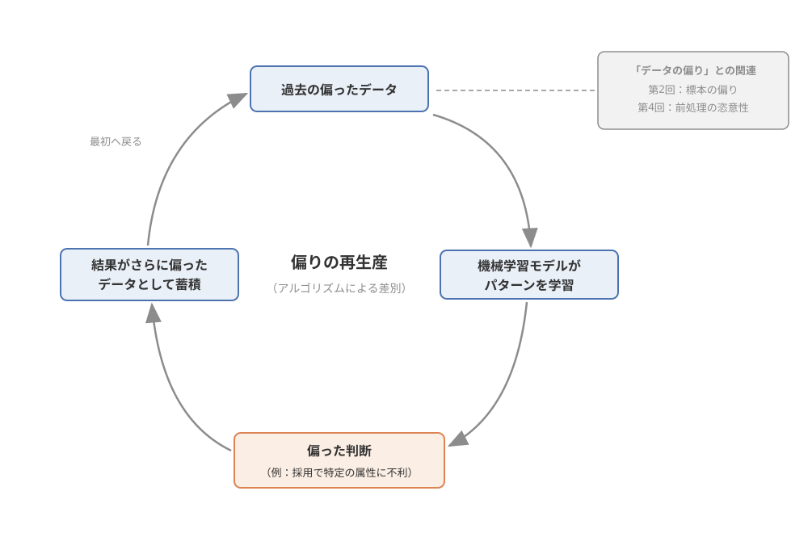
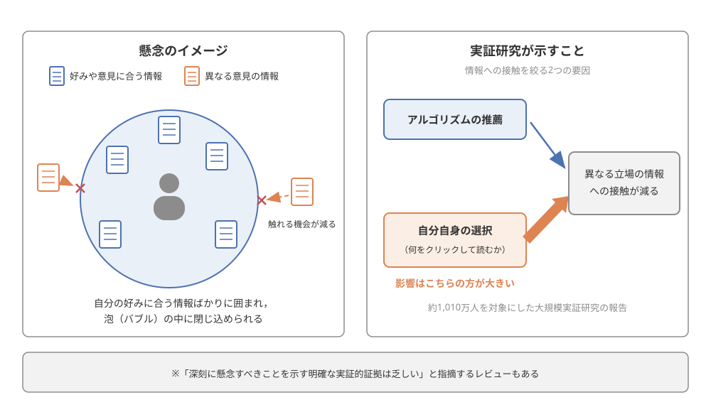

第9回：データと法——情報法の基礎#
この回で学ぶこと#
データの取得・利用を規律する個人情報保護法の基本的な考え方（個人情報の定義，利用目的のルール，仮名加工情報・匿名加工情報という区分）を説明できるようになる．
「匿名化すれば安全」という直感には限界があることを，実際の再識別事例を通じて理解する．
著作権の基本的な考え方と，データベースの保護，AI学習と著作権をめぐる論点の存在を知る．
法律を守るだけでは足りない場面があること（データ倫理）を，公平性・アルゴリズムによる差別・フィルターバブルなどの事例を通じて知る．
第2回で予告した「集めてよいデータ・集め方のルール」の答え合わせをし，第10回「生成AI」の法的論点への足がかりを作る．
導入：その「同意する」ボタン，何に同意していますか？#
第2回「データの収集」の最後に，「集めてよいデータ・集め方のルール（同意・プライバシー）は第7回で扱います」と予告しました．この回は，その伏線を回収する回です．データの収集から可視化まで一通りの流れを学んできたいま，あらためて「そもそもそのデータ，集めてよかったのか？ 使ってよかったのか？」という問いに向き合います．
みなさんは，新しいスマホアプリをインストールするとき，利用規約やプライバシーポリシーを最後まで読んでから「同意する」を押しているでしょうか．正直に言えば，ほとんどの人は読んでいないはずです．しかしその画面の裏側では，「あなたのどんなデータを集めるか」「何の目的で使うか」「誰に渡す可能性があるか」が書かれており，みなさんはそれに法的な意味で「同意」したことになっています．
事例：就活サービスと「予測データ」の販売
かつて日本で，ある就職活動支援サービスをめぐって大きな問題になった出来事があります（ここでは一般化して紹介します）．そのサービスは，学生がサイト上でどの企業のページを閲覧したかという行動履歴データをもとに，学生ごとの「内定辞退率」を予測し，そのスコアを企業側に販売していたとされます．多くの学生は，自分の閲覧履歴がそのような形で使われるとは想像しておらず，十分な説明や同意もないままでした．この件は行政機関からの指導・勧告に発展し，「本人が想定していない目的でのデータ利用」の危うさを社会に強く印象づけました．
みなさんも数年後には就職活動でこうしたサービスを使うことになります．これは「どこか遠くの話」ではなく，みなさん自身のデータの話なのです．
この事例の重要なポイントは，「データを集める技術があること」と「そのデータをその目的で使ってよいこと」はまったく別問題だ，という点です．データサイエンスの技術が強力になればなるほど，それを支えるルール——法律と倫理——の理解が欠かせなくなります．この回では，データ利活用に関わる法制度の基礎として個人情報保護法と著作権を主軸に学び，最後に法律だけではカバーしきれないデータ倫理の世界に視野を広げます．
なお，本章は法律の専門講義ではありません．条文の細かい解釈や罰則の詳細には立ち入らず，「データを扱うすべての人が知っておくべき基本的な考え方」に絞って説明します．正確な最新情報は，本文中で紹介する政府の公式資料（個人情報保護委員会・文化庁）を参照してください．
個人情報を守るしくみ——個人情報保護法#
個人情報とは何か#
日本でデータの取り扱いを規律する中心的な法律が個人情報保護法です．正式名称は「個人情報の保護に関する法律」で，個人情報を取り扱う企業・団体などが守るべきルールを定めています．この法律の運用を担う行政機関が個人情報保護委員会（Personal Information Protection Commission）で，公式サイト（https://www.ppc.go.jp/）にはガイドラインやわかりやすい解説資料が公開されています．本章の個人情報保護法に関する説明も，この公式資料の内容を基礎にしています．
では，そもそも個人情報（personal information）とは何でしょうか．個人情報保護法における個人情報とは，おおまかに言えば，生存する個人に関する情報であって，特定の個人を識別できるもののことです．典型例は氏名や顔写真ですが，重要なのは「単独では誰のことか分からなくても，他の情報と容易に照らし合わせることで個人を特定できるなら，それも個人情報になる」という点です．
たとえば「名古屋市在住・19歳・大学1年生」だけでは個人を特定できませんが，これに学籍番号や氏名が結びつけば個人情報です．また，マイナンバーや運転免許証番号のような，それ自体で個人に割り当てられた番号・記号（個人識別符号と呼ばれます）も個人情報に含まれます．メールアドレスも，yusuke_yamamoto@... のように氏名や所属が読み取れるものは個人情報にあたり得ます．
学生生活に引きつけて言えば，サークルの新歓で集めた新入生の名簿，ゼミの連絡網，アルバイト先の顧客リスト，イベントで撮影した参加者の顔が写った写真——これらはすべて個人情報を含むデータです．「企業が扱うビッグデータ」だけの話ではないことを，まず押さえてください．
プライバシーという考え方#
個人情報とよく似た言葉にプライバシー（privacy）があります．両者は重なりますが，同じではありません．個人情報保護法が「個人を識別できる情報の適正な取り扱い」を定めた法律上の制度であるのに対し，プライバシーは，私生活をみだりに公開されない，自分に関する情報の扱われ方を自分でコントロールしたいという，より広い利益・権利の考え方です．プライバシーは判例の積み重ねを通じて法的に保護されるべき利益として認められてきました．
両者のずれが分かる例を挙げましょう．友人があなたの帰宅時間や交友関係をSNSで勝手に暴露したとします．投稿に氏名が書かれていなくても，知り合いが読めば誰のことか分かる内容であれば，あなたのプライバシーは傷つけられています．逆に，法律上のルールをすべて守って取得された個人情報でも，本人が「そんな使われ方をするとは思わなかった」と感じる使い方をすれば，プライバシーの観点から問題になり得ます．導入で紹介した就活サービスの事例が炎上したのも，まさにこの「法律の形式だけでは片づかない，本人の合理的な期待への裏切り」が大きかったからです．
「個人情報保護法を守っていれば，プライバシーの問題は起きない」とは限らない——この感覚は，この章全体を貫く重要な視点なので，覚えておいてください．
取得と利用の基本ルール——利用目的という考え方#
個人情報保護法の基本的な枠組みのうち，データサイエンスの入り口として最低限知っておきたいのは，次の考え方です．
利用目的の特定：個人情報を取得するときは，「何のために使うのか」という利用目的をできる限り具体的に定めなければなりません．
利用目的の通知・公表：定めた利用目的は，本人に通知するか，あらかじめ公表しておく必要があります．アプリやWebサービスの「プライバシーポリシー」は，この公表の役割を果たしています．
目的外利用の制限：定めた利用目的の範囲を超えて個人情報を使うには，原則として本人の同意が必要です．
適正な取得：偽りその他不正な手段で個人情報を取得してはいけません．
ポイントは，この枠組みが「個人情報を集めるな」ではなく，「目的を明らかにし，その範囲で適正に使うなら活用してよい」 という設計になっていることです．個人情報保護法は，個人の権利利益を守ることと，データの有用性・利活用とのバランスを取ることを目指した法律なのです．
冒頭のアプリの利用規約の話に戻りましょう．「同意する」ボタンが法的に意味を持つのは，この枠組みがあるからです．サービス提供者は利用目的を公表し，ユーザーの同意を得ることで，データを適法に取得・利用できます．逆に言えば，ユーザーであるみなさんにとって，プライバシーポリシーの「取得する情報」「利用目的」「第三者提供」の欄は，読み飛ばしてよい飾りではなく，自分のデータがどう扱われるかを知る唯一の手がかりです．すべてを熟読するのは現実的でなくても，位置情報や連絡先など気になるデータについてだけでも確認する習慣は，データ社会を生きるリテラシーの一部だと言えます．
警告
身近な落とし穴として「目的外利用」に注意してください．たとえば，サークルの新歓で「連絡用」として集めた新入生の連絡先リストを，本人に断りなくアルバイト先の勧誘に使ったり，他団体に渡したりするのは，集めたときの目的を超えた利用です．企業であれば法律上の問題になり得る行為であり，学生団体でも信頼を根本から損ないます．「集めたときに伝えた目的の範囲で使う」は，規模の大小を問わずデータを扱う人の基本動作です．
この基本ルールの流れと，サークルの名簿の例との対応を 図 40 に整理しました．「目的を決めて，本人に伝えて，その範囲で使う」という流れが基本であり，範囲を超えて使いたいときには本人の同意という迂回路を通る必要があることを確認してください．

図 40 利用目的の基本ルール——「目的を決めて，伝えて，その範囲で使う」とサークル名簿の例#
加工すれば使ってよいのか——仮名加工情報と匿名加工情報#
ここで一つの疑問が浮かびます．「個人が特定できるから問題なのであって，名前を消してしまえば自由に使ってよいのではないか？」——データ利活用の現場で必ず出てくる発想です．個人情報保護法は，この「加工したデータ」について，加工の程度に応じた区分を用意しています．代表的なものが仮名加工情報と匿名加工情報です．
仮名加工情報（pseudonymized information）は，氏名などを削除・置き換えして，他の情報と照合しない限り特定の個人を識別できないようにしたデータです．たとえば顧客データの氏名を「ユーザーA」「ユーザーB」のようなIDに置き換えたものをイメージしてください．元の対応表と照合すれば誰のことか分かる状態なので，本人に関わる情報としての性質は残っています．そのため，主に組織の内部での分析に使うことを想定した区分で，通常の個人情報よりも一部のルールが緩和される代わりに，本人を特定するために他の情報と照合してはいけない，といった義務が課されます．
匿名加工情報（anonymized information）は，さらに加工を進めて，特定の個人を識別できず，元の個人情報を復元できないようにしたデータです．こちらは一定のルール（加工方法の基準を守る，作成や第三者提供の際に公表するなど）のもとで，本人の同意なしに第三者へ提供して利活用できることが大きな特徴です．
直感的には，仮名加工情報は「名札を裏返した状態」，匿名加工情報は「名札を外して，元に戻せないよう作り直した状態」 とイメージすると分かりやすいでしょう．前者は内部利用向け，後者は外部への提供・流通も視野に入れた区分です．この二つの区分の存在は，「守るべきものは守りつつ，データの利活用も進める」という個人情報保護法の設計思想をよく表しています．なお，加工の具体的な基準や義務の詳細は個人情報保護委員会のガイドラインに定められていますので，実務で扱う際は必ず公式資料（https://www.ppc.go.jp/）を確認してください．
この3つの区分の関係を 図 41 に整理しました．右へ進むほど加工の程度が進み，「名札」の状態と使い方が変わっていくことを確認してください．

図 41 個人情報・仮名加工情報・匿名加工情報——加工の程度に応じた3つの区分#
「匿名化すれば安全」の限界——Netflix再識別事例#
では，きちんと加工すれば本当に「誰のデータか」は分からなくなるのでしょうか．この直感の限界を鮮烈に示したのが，映像配信サービスNetflixのデータをめぐる有名な研究です [Narayanan and Shmatikov, 2008]．
事例：約50万人の「匿名」映画評価データ
2006年，Netflixは映画のおすすめアルゴリズムの改良コンテストのために，約50万人分の映画評価データ（どの映画に何点をつけたか，その日付）を公開しました．氏名などは削除され，ユーザーは無意味なIDに置き換えられた「匿名」のデータでした．
しかし，研究者のNarayananとShmatikovは，このデータが別の公開情報（映画レビューサイトに実名で投稿された評価）と照合できることを示しました．彼らの分析によれば，64%の加入者は，わずか2件の評価とその日付を知るだけで完全に再識別でき，89%については約50万件の中から8件以下にまで絞り込めるというのです [Narayanan and Shmatikov, 2008]．
「どの映画をいつ観たか」は一見ささいな情報ですが，人によっては思想・信条や性的指向を推測させる映画の視聴記録が含まれ得ます．名前を消したはずのデータから個人が浮かび上がるこの結果は，世界中のデータ公開のあり方に大きな影響を与えました．
この事例が教えてくれるのは，「名前を消す」ことと「個人を特定できなくする」ことの間には大きな隔たりがあるという事実です．一人ひとりの行動履歴（視聴履歴・購買履歴・位置情報など）は，それ自体が指紋のようにユニークなパターンを持つため，外部の情報と突き合わせる（照合する）ことで個人が再識別（re-identification）されてしまうことがあるのです．
この照合のしくみを 図 42 に示します．評価と日付という一見ささいな情報の組み合わせが，実名の情報と突き合わせるための手がかりになることが分かります．

図 42 Netflix再識別事例における照合のしくみ [Narayanan and Shmatikov, 2008]．映画名・人名は説明用の架空の例#
前節で学んだ匿名加工情報の制度が，単に「名前を消す」ではなく「復元できないように加工する」ことを求め，しかも詳細な加工基準をガイドラインで定めているのは，まさにこうした再識別のリスクを踏まえてのことです．データを公開・提供する側に立ったとき，「匿名化したから大丈夫」と安易に考えてはいけない——これは，データサイエンスを学ぶ人が最初に身につけるべき慎重さの一つです．
創作物とデータを守るしくみ——著作権#
著作権とは何か——SNSの投稿も著作物#
個人情報保護法が「人に関するデータ」のルールだとすれば，もう一つの主軸である著作権（copyright）は「人が創作した表現」のルールです．著作権は，小説・音楽・絵画・写真・映画・プログラムなど，思想や感情を創作的に表現したもの（著作物） を保護する権利で，著作物を創作した時点で自動的に発生します．特許のような登録手続きは不要です．
「創作的な表現」というとプロの作品を想像するかもしれませんが，ハードルはそれほど高くありません．みなさんがSNSに投稿した文章や写真，授業のレポート，友人が描いたイラスト——これらも創作性が認められれば立派な著作物であり，作った本人に著作権があります．逆に言えば，他人のイラストや写真を「ネットで拾ったから」と自分のSNSアイコンや資料に無断で使う行為は，著作権侵害になり得ます．インターネット上で公開されていることと，自由に使ってよいことは別なのです．
一方で，著作権法は「保護」一辺倒の法律ではありません．文化の発展のためには，先人の作品を学び，引用し，批評できることも重要です．そのため著作権法には，一定の条件を満たせば許諾なく著作物を利用できる例外規定が数多く置かれています．たとえば，本講義ノートが他の文献の図や文章を出典を明記して引用しているのも，こうした例外規定に基づく利用です．著作権制度の全体像や最新の動向については，制度を所管する文化庁の公式サイト（https://www.bunka.go.jp/）が信頼できる情報源です．
ここで注意してほしいのは，事実やデータそのものは著作物ではないという点です．著作権が守るのは「創作的な表現」であって，アイデアや事実は保護しません．たとえば「2026年8月の名古屋の平均気温は◯度だった」という事実，実験で得られた測定値そのものには著作権は発生しません．では，データサイエンスの主役である「データの集まり」は，法的にどう扱われるのでしょうか．
データやデータベースは守られるのか——データベースの権利#
大量のデータを集め，整理したものをデータベースと呼ぶことは第3回で学びました．著作権法は，このデータベースについても一定の保護を用意しています．すなわち，情報の選び方や体系的な構成に創作性があるデータベースは，「データベースの著作物」として保護されるのです．本章ではこれをデータベースの権利と呼んでおきます．
ポイントは，保護されるのが「中身のデータ一つひとつ」ではなく「選択や構成の創作性」だという点です．たとえば，ある観点から情報を独自に選び抜き，独自の分類体系で整理した辞典型のデータベースは保護の対象になり得ます．一方で，機械的に網羅しただけで選択にも構成にも創作性がないデータの集積は，データベースの著作物とは認められにくいと考えられています．つまり，手間やお金をかけて集めたデータであっても，法的に必ず保護されるとは限らないのです（悪質なコピー行為が別の法理で違法とされた裁判例はありますが，個別の事案ごとの判断になります）．
このことは，データ利活用の実務に大きな示唆を与えます．データそのものの法的保護が限定的だからこそ，現実の世界では，データの提供条件を契約（利用規約・ライセンス）で細かく定めるのが一般的です．第2回で学んだオープンデータに「CC BY（出典を表示すれば自由に使える）」のようなライセンスが付いているのも，Webスクレイピングの可否がサイトの利用規約で定められているのも，この文脈で理解できます．データを使うときは，著作権の有無だけでなく，利用規約・ライセンスを確認する——これが実務上の基本動作です．
AI学習と著作権——いま最も熱い論点#
著作権とデータの関係で，いま社会的に最も注目されているのがAI学習と著作権の問題です．画像生成AIや大規模言語モデル（第8回で詳しく学びます）は，インターネット上の大量の文章や画像を「学習」して作られます．その学習データの中には，当然，他人の著作物が大量に含まれています．そこで，「AIの学習のために著作物を許諾なく利用してよいのか」「AIが生成した画像や文章が既存の作品に似ていたらどうなるのか」といった論点が，世界中で議論されています．
日本の著作権法には，コンピュータによる情報解析（大量の情報から言語・音・映像などの要素に関する情報を抽出し，比較・分類などの解析を行うこと）のためであれば，一定の条件のもとで著作権者の許諾なく著作物を利用できるとする規定があり，AI開発に比較的有利な制度だと紹介されることもあります．ただし，この規定は無制限ではなく，「著作権者の利益を不当に害することとなる場合」には適用されないなどの限界があり，どこまでが適法かをめぐる解釈が活発に議論されています．
この論点について，文化庁は2024年に「AIと著作権に関する考え方について」という整理を公表し，AI開発（学習）段階と生成・利用段階に分けて，現行法の解釈の考え方を示しました．考え方は今後も議論とともに更新されていくため，最新の内容は文化庁のAIと著作権に関する公式ページ（https://www.bunka.go.jp/seisaku/chosakuken/aiandcopyright.html）で確認してください．
注釈
ここで大切なのは，個別の結論を暗記することではなく，「AI学習と著作権」は現在進行形で議論が続いている論点だと知っておくことです．技術の進歩に法制度が追いつこうとしている過渡期には，「適法か違法かがまだはっきりしないグレーゾーン」が必ず生まれます．そうした場面で，一次資料（政府の公式見解）に当たって考える姿勢こそが，この章で身につけてほしいリテラシーです．この論点は，第10回「生成AI」で学ぶ内容と直結します．
法だけでは足りない——データ倫理とアルゴリズムの社会的影響#
ここまで，個人情報保護法と著作権という二つの法制度を学んできました．最後に視野を広げて，法律を守っているだけでは防げない問題の世界を紹介します．ここからは深入りせず，「こういう問題があるのか」という事例紹介のレベルに留めます（本格的な議論は上級学年の科目や参考文献に委ねます）．
データ倫理・公平性・アルゴリズムによる差別#
データ倫理（data ethics）とは，データやアルゴリズムの利用が人や社会に与える影響について，「適法かどうか」の一歩先——「やってよいことか，公正なことか」——を問う考え方です．導入の就活サービスの事例で見たように，法律の形式を満たしていても人々の信頼を裏切る使い方はあり得ます．データを扱う者には，法律とあわせて倫理的な判断が求められるのです．
データ倫理の中心的なテーマの一つが公平性（fairness）です．近年，採用の書類選考，ローンの審査（与信），保険料の算定など，人の人生を左右する判断に機械学習アルゴリズムが使われる場面が増えています．アルゴリズムは人間と違って感情や偏見がないから公平だ——と思いたくなりますが，現実はそう単純ではありません．機械学習は過去のデータからパターンを学ぶ技術です．もし過去のデータに社会の偏りや過去の差別の痕跡が含まれていれば，アルゴリズムはそれを忠実に学び，再生産してしまいます．これがアルゴリズムによる差別（algorithmic discrimination）と呼ばれる問題です．
たとえば，過去に男性ばかりを採用してきた組織の採用データで「優秀な応募者」を予測するモデルを学習させれば，モデルは女性に不利な判断を学んでしまうかもしれません．実際，海外の大手企業がAI採用ツールの開発において特定の性別に不利な傾向が見つかり運用を取りやめた，と報じられた事例や，与信の審査で属性による不公平が疑われて議論になった事例が知られています（報道ベースの事例であり，ここでは一般化して紹介しています）．機械学習におけるバイアスの発生源と公平性の定義については，体系的なサーベイ論文があり，データの偏り・アルゴリズムの設計・人間とシステムの相互作用など，バイアスが入り込む経路が多岐にわたることが整理されています [Mehrabi et al., 2021]．
こうした偏りの再生産の構造を 図 43 に示します．過去の偏ったデータから学んだモデルが偏った判断を下し，その結果がさらに偏ったデータとして蓄積されて次の学習に使われる——という循環が生じ得るのです．

図 43 アルゴリズムのバイアスの循環——偏ったデータが偏った判断を生み，偏りが再生産される#
第2回で学んだ「標本の偏り」や第4回の「前処理の恣意性」を思い出してください．データの偏りは，分析結果の偏りとなり，それが社会に実装されると現実の不公平になる——データのライフサイクル全体が，実は公平性の問題とつながっているのです．
フィルターバブル——懸念と実証のあいだ#
アルゴリズムの社会的影響としてもう一つ有名なのがフィルターバブル（filter bubble）です．SNSや動画サイト，ニュースアプリは，あなたの閲覧履歴から「あなたが好みそうな情報」を推薦アルゴリズムで選んで表示します．その結果，自分の好みや意見に合う情報ばかりに囲まれ，異なる意見に触れる機会が減って，泡（バブル）の中に閉じ込められたようになるのではないか——という懸念です．みなさんも，動画サイトのおすすめ欄が「いつもの傾向」で埋まっている経験があるでしょう．
ただし，この問題については均衡の取れた見方が大切です．フィルターバブルという言葉のインパクトは強いのですが，実証研究を批判的にレビューした論文は，現時点で 「深刻に懸念すべきことを示す明確な実証的証拠は乏しい」 と指摘しています [Zuiderveen Borgesius et al., 2016]．また，Facebook上の約1,010万人のユーザーを対象にした大規模な実証研究では，自分と異なる立場のニュースへの接触を最も強く減らしていたのはアルゴリズムではなく，「何をクリックして読むか」という個人の選択の方だったと報告されています [Bakshy et al., 2015]（ただしこの研究は同社の研究者によるもので，対象も政治的立場を明示したユーザーに限られる点には留意が必要です）．
この「懸念のイメージ」と「実証研究が示すこと」の対比を 図 44 に整理しました．情報への接触を絞る要因はアルゴリズムの推薦だけではなく，私たち自身の選択も大きいという点がポイントです．

図 44 フィルターバブル——懸念のイメージ（左）と実証研究が示すこと（右） [Bakshy et al., 2015, Zuiderveen Borgesius et al., 2016]#
つまり現時点での誠実なまとめは，こうなります．懸念には根拠がある一方で，「アルゴリズムのせいで社会が分断された」と断定できるほどの証拠はなく，私たち自身の選択の影響も大きい．「アルゴリズムが悪い」と単純化するのではなく，自分の情報環境を意識して，ときには検索語を変えたり，立場の異なる情報源をあえて見に行ったりする——そうした利用者側の行動も含めて考えるべき問題なのです．
こうした公平性・差別・フィルターバブルの問題をまとめて，本章ではアルゴリズムの社会的影響と呼びます．アルゴリズムはもはや，コンピュータの中だけの存在ではありません．何を推薦し，誰を選考に通し，どんな情報を見せるかを通じて，社会のあり方そのものに影響を与えています．だからこそ，アルゴリズムを作る側にも使う側にも，法と倫理の両方の視点が必要なのです．
活用事例：匿名加工情報が広げるデータ利活用#
法律は「ブレーキ」の話ばかりに見えたかもしれませんが，最後に，法制度が利活用の「アクセル」としても機能している例を紹介します．
事例：加工されたデータが社会で活きる
匿名加工情報の制度は，「本人の同意を個別に取ることが難しい大量のデータを，個人の権利利益を守りながら社会で活用する」ための道を開きました．実際に，次のような利活用が行われています（いずれも一般的な例として紹介します）．
購買データの分析：小売やポイントサービスの購買履歴を匿名加工し，メーカーや研究機関に提供して，商品開発や需要予測に活用する．
移動・人流データの分析：携帯電話の位置情報などを集計・加工した人流データを，まちづくりや観光振興，災害時の避難計画の検討に活用する．
医療・健康データの研究利用：医療機関の診療データを適切に加工・管理したうえで研究に用い，治療法の改善や薬の安全性の検証に役立てる（医療分野では専用の法制度も整備されています）．
ここで思い出してほしいのが，本章で学んだNetflixの再識別事例です [Narayanan and Shmatikov, 2008]．行動履歴は個人の指紋のようにユニークだからこそ，こうした利活用は「名前を消せばよい」という素朴な発想ではなく，再識別リスクを踏まえた加工基準と法的義務のセットの上に成り立っています．過去には，交通機関の乗降履歴データの外部提供が，利用者への説明が不十分だとして社会的な批判を受け，計画の見直しに至った出来事もありました（ここでは一般化して紹介します）．データ利活用の成否は，技術だけでなく，法制度の遵守と，本人の納得感（プライバシーへの配慮） にかかっている——本章の内容が凝縮された好例と言えるでしょう．
まとめ#
この回では，データ利活用を支える法制度の基礎と，その先にあるデータ倫理を学びました．要点を振り返ります．
個人情報保護法は，生存する個人を識別できる情報（個人情報）について，利用目的の特定・通知や目的外利用の制限などのルールを定め，保護と利活用のバランスを図る法律です．一次資料は個人情報保護委員会（https://www.ppc.go.jp/）の公式資料です．
加工の程度に応じて仮名加工情報（主に内部分析向け．照合すれば個人に戻り得る）と匿名加工情報（復元できないよう加工し，同意なしの第三者提供も可能）という区分があります．
ただし，Netflixの再識別事例——64%の加入者が2件の評価と日付だけで再識別された——が示すように，「匿名化すれば安全」という直感には限界があります [Narayanan and Shmatikov, 2008]．
著作権は創作的な表現を保護します．SNSの投稿も著作物になり得る一方，事実やデータそのものは保護されず，創作性のあるデータベースがデータベースの権利（データベースの著作物）として保護されます．だからこそ実務では利用規約・ライセンスの確認が基本動作になります．
AI学習と著作権は現在進行形の論点であり，文化庁「AIと著作権に関する考え方について」などの一次資料に当たる姿勢が重要です．
法律を守るだけでは足りない場面を扱うのがデータ倫理です．公平性をめぐるアルゴリズムによる差別の懸念 [Mehrabi et al., 2021] や，フィルターバブル——ただし懸念を裏づける明確な証拠は乏しいとするレビュー [Zuiderveen Borgesius et al., 2016] や，個人の選択の影響の方が大きいとする大規模実証 [Bakshy et al., 2015] もある——など，アルゴリズムの社会的影響への視点が求められます．
次回はいよいよ最終回，第10回「生成AIの基礎と知的活動への利用」です．生成AIは，本章で学んだ論点のいわば集大成です．学習データには他人の著作物や個人情報が含まれ得ます（AI学習と著作権・個人情報保護法），学習データの偏りは出力のバイアスにつながります（公平性）．本章で学んだ法と倫理のレンズを持って，生成AIの仕組みと付き合い方を学びましょう．
確認問題#
問1（事例判断型）：あるサークルが新入生歓迎会で，「今後の連絡のため」と説明して新入生の氏名・LINE ID・メールアドレスを集めました．後日，幹部の一人が，このリストを（a）自分のアルバイト先の塾の勧誘メール送信に使い，さらに（b）他大学のイベントサークルに「新入生名簿」として渡しました．このデータの扱いの問題点を，本章で学んだ考え方を使って指摘してください．
解答と解説
このリストは氏名を含み特定の個人を識別できるため，個人情報を含むデータです．問題点は大きく2つあります．
目的外利用（a）：データは「今後の連絡のため」という目的を示して集められました．塾の勧誘という営業目的での利用は，取得時に示した利用目的の範囲を明らかに超えており，本人の同意もありません．個人情報保護法の基本的な枠組みは「利用目的を特定・通知し，その範囲で使う」ことであり，目的外利用には原則として本人の同意が必要です．
無断の第三者提供（b）：本人に断りなく名簿を他団体へ渡すことは，本人がまったく想定していないデータの流通であり，同意のない第三者への提供として問題です．
なお，仮にこの行為が法律上の義務の対象になるかどうか微妙なケースだったとしても，「本人が想定していない使われ方」はプライバシーへの裏切りであり，データ倫理の観点からも許されません．「集めたときに伝えた目的の範囲で使う」が基本動作です．
問2（事例判断型）：ある動画配信サービスが，研究促進のために視聴履歴データ（ユーザーID・作品名・評価・日付）を公開することにしました．担当者は「ユーザーIDをランダムな文字列に置き換えたので，誰のデータか分からず安全だ」と説明しています．この説明の問題点はどこにあるでしょうか．
解答と解説
問題点は，「名前（ID）を消すこと」と「個人を特定できなくすること」を混同している点です．視聴履歴のような行動履歴データは，一人ひとりのパターンが指紋のようにユニークです．そのため，別の公開情報（たとえばレビューサイトに実名で投稿された評価）と照合することで，個人が再識別されるおそれがあります．
実際，Netflixが公開した約50万人分の匿名映画評価データでは，64%の加入者はわずか2件の評価とその日付だけで完全に再識別でき，89%は8件以下にまで絞り込めることが研究で示されました [Narayanan and Shmatikov, 2008]．
日本の個人情報保護法の匿名加工情報の制度が，単なるIDの置き換えではなく「特定の個人を識別できず，復元もできない」水準の加工基準と法的義務を定めているのは，この再識別リスクを踏まえたものです．担当者は，定められた加工基準に従った加工と手続きを行う必要があります．
問3（知識確認型）：次の記述のうち，本章の内容に照らして適切でないものを1つ選んでください．
SNSに投稿された一般人の文章や写真でも，創作性があれば著作物として保護される．
実験で得られた測定値そのものには著作権は発生しないが，情報の選択や体系的な構成に創作性のあるデータベースは保護され得る．
推薦アルゴリズムによるフィルターバブルが社会の分断を引き起こしていることは，大規模な実証研究によって明確に証明されている．
機械学習アルゴリズムは，学習に使う過去のデータに偏りがあると，その偏りを学んで差別的な判断を再生産してしまうことがある．
解答と解説
適切でないのは 3 です．
フィルターバブルは広く懸念されている問題ですが，実証研究のレビューは「深刻に懸念すべきことを示す明確な証拠は乏しい」と指摘しています [Zuiderveen Borgesius et al., 2016]．また，約1,010万人を対象とした大規模実証研究では，異なる立場の情報への接触を制限する要因として，アルゴリズムよりも個人の選択の影響の方が大きいと報告されています [Bakshy et al., 2015]．「明確に証明されている」という記述は誤りです．
1と2は著作権・データベースの権利の説明として適切です．4はアルゴリズムによる差別の説明として適切であり，バイアスの発生源はサーベイ論文に体系的に整理されています [Mehrabi et al., 2021]．
さらに学ぶために#
事例 → 解説 → 原典の順で読み進めるのがおすすめです．あわせて，日本法については政府の公式資料を一次資料として参照してください．
【政府公式資料】個人情報保護委員会：https://www.ppc.go.jp/ 個人情報保護法を所管する行政機関の公式サイト．法律の概要，ガイドライン，仮名加工情報・匿名加工情報の解説資料などが公開されています．本章の日本法パートの一次資料です．
【政府公式資料】文化庁「AIと著作権」関連ページ：https://www.bunka.go.jp/seisaku/chosakuken/aiandcopyright.html 著作権制度を所管する文化庁による，「AIと著作権に関する考え方について」をはじめとする公式資料．AI学習と著作権の論点の最新動向はここで確認できます．
【原典・事例】Narayanan, A. & Shmatikov, V., "Robust De-anonymization of Large Sparse Datasets," IEEE S&P 2008 [Narayanan and Shmatikov, 2008]． Netflixデータ再識別の原典．「匿名化すれば安全」の限界を示した決定的な研究で，後にTest of Time Awardを受賞しています．全文：https://arxiv.org/abs/cs/0610105
【解説・サーベイ】Mehrabi, N. et al., "A Survey on Bias and Fairness in Machine Learning," ACM Computing Surveys, 2021 [Mehrabi et al., 2021]． 機械学習におけるバイアスの発生源と公平性の定義を体系的に整理したサーベイ．全文（arXiv版）：https://arxiv.org/abs/1908.09635
【解説・サーベイ】Zuiderveen Borgesius, F. J. et al., "Should We Worry About Filter Bubbles?," Internet Policy Review, 2016 [Zuiderveen Borgesius et al., 2016]． フィルターバブルの実証的根拠を批判的に検討したオープンアクセスのレビュー．全文：https://doi.org/10.14763/2016.1.401
【原典・事例】Bakshy, E., Messing, S. & Adamic, L. A., "Exposure to Ideologically Diverse News and Opinion on Facebook," Science, 2015 [Bakshy et al., 2015]． 約1,010万人を対象に，アルゴリズムより個人の選択の影響が大きいことを示した大規模実証研究．DOI：https://doi.org/10.1126/science.aaa1160